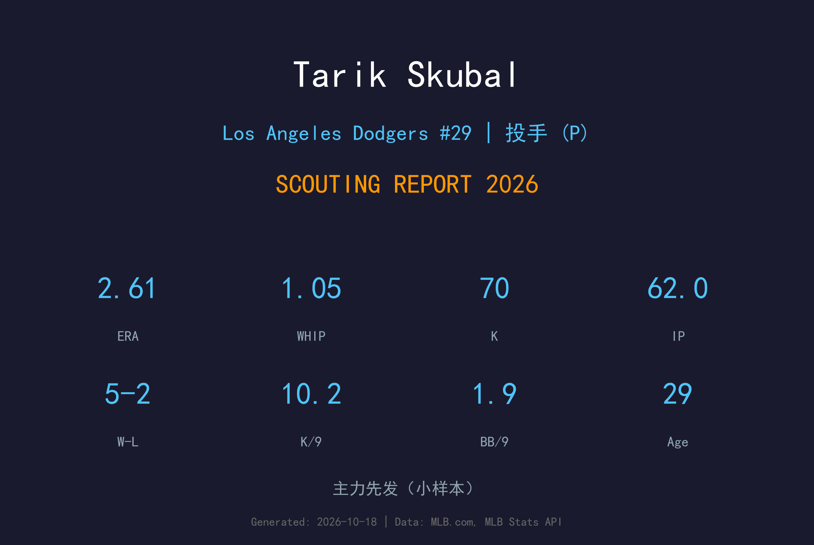
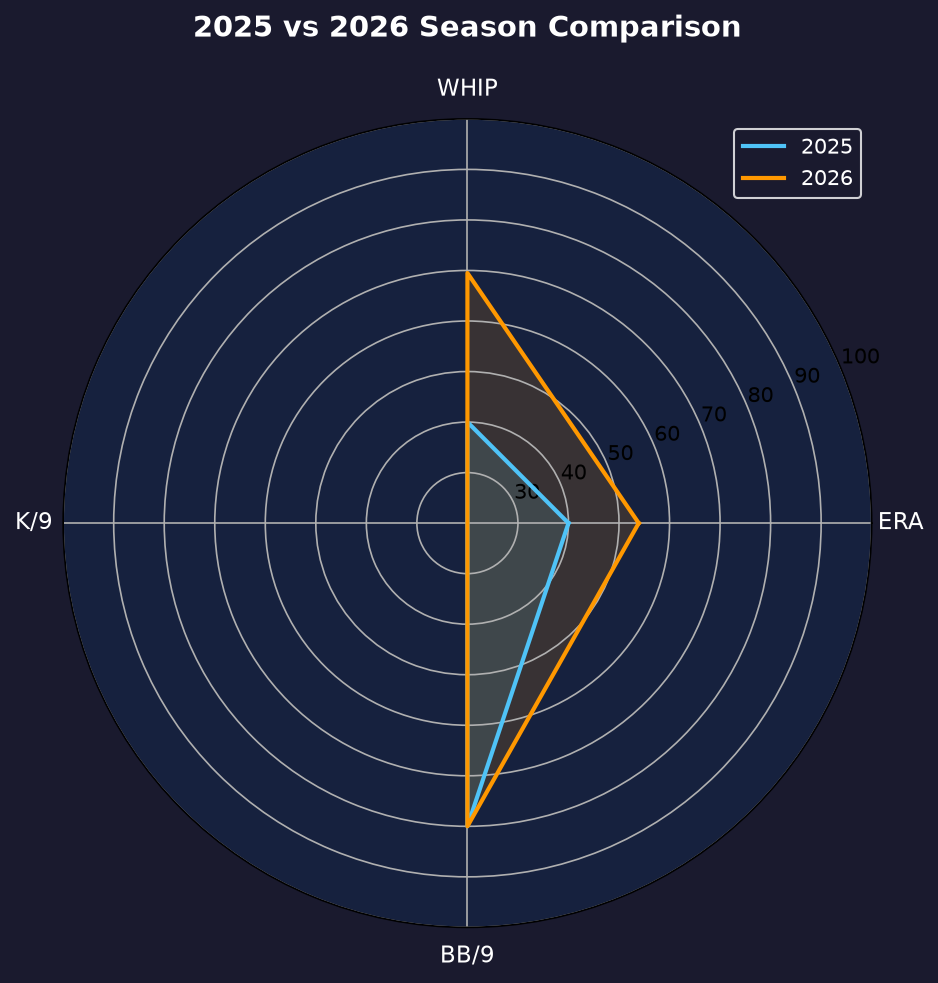
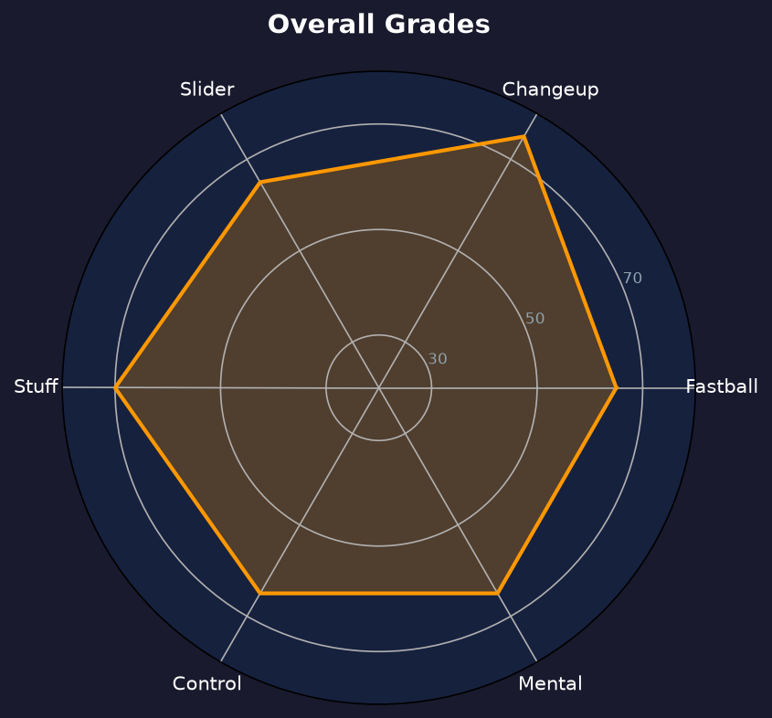

Los Angeles Dodgers #49 | 先发投手 | 左投 / 左打 | 赛扬连庄王牌

Tarik Skubal 是现役最强左投之一、2024-2025 年美联赛扬奖连庄得主（Pedro Martinez 后首人）。2026年8月2日交易截止日，道奇以一纸重磅交易将他带到洛杉矶，为季后赛冲刺装上最后一块拼图。
道奇时期的10场先发，他缴出5胜2败、2.61 ERA、1.05 WHIP、62局70次三振（10.16 K/9）的顶级成绩。他的速球与变速球组合在 NL 依旧无解，1.89 BB/9 的保送率与 0.58 HR/9 的压制力展现赛扬本色。
29岁的 Skubal 正处于投手的黄金巅峰期。他与山本由伸组成的轮值双王牌，让道奇成为2027年世界冠军的最大热门。
18胜4败、2.39 ERA、228K，包办美联胜投、ERA、三振三冠王。
2.21 ERA、241K、0.89 WHIP，Pedro Martinez 后首位连庄美联赛扬的投手；季后赛单场14K 创 AL 左投纪录。
交易截止日重磅转会，10场先发 5-2、2.61 ERA，即插即用的王牌级表现。
注：数据为8月2日交易加盟道奇后的10场先发；此前赛季效力于底特律老虎。

2025年效力老虎（赛扬连庄年，2.21 ERA / 241K），2026年8月2日交易至道奇。本页图表由脚本根据最终数据自动生成。
10场先发仅4场无关胜负，其余6场拿到胜投或优质先发。62局仅4轰、0.58 HR/9 在道奇轮值中仅次常规赛被轰 0 的 Snell——但 Skubal 的样本是 Snell 的1.5倍。他的加盟让道奇轮值从"豪华但有伤病隐患"变成"真正的双王牌驱动"。
主战球种，占全部配球的 38.0%，均速 96.8 mph。直上直下的四缝线速球，负责抢好球数与建立球数领先，是所有配球的基准。
常用武器，占全部配球的 25.6%，均速 87.7 mph。变速球靠与速球的速差取命，主要用来对付反侧打者。
常用武器，占全部配球的 17.5%，均速 96.7 mph。伸卡球下沉明显，主要用于制造滚地球、压低长打率。
辅助配球，占全部配球的 13.9%，均速 89.7 mph。传统滑球横向位移锐利，是两好球后的主要挥空武器。
辅助配球，占全部配球的 5.0%，均速 80.4 mph。曲球落差大，用于改变打者视线高度与击球节奏。
10.16 K/9、5.38 K/BB、0.58 HR/9、1.05 WHIP——四项核心指标全部保持赛扬年水准。从美联到国联的转换没有丝毫水土不服，反而因道奇的守备与配球体系让他的数据更漂亮。
季后赛2场先发11局、2.45 ERA、14K——Skubal 是道奇 NLCS 被横扫期间唯一交出优质先发的投手。他的 11.5 K/9 季后赛三振率证明，他的 stuff 在季后赛强度下没有缩水。
从老虎的赛扬王牌到道奇的季后赛拼图，Skubal 的2026年完整而无憾。他让道奇在交易市场上付出了巨大代价，但也用每五天的顶级表现证明物超所值。

赛扬连庄的现役顶级左投，道奇双王牌之一
A 级 / 赛扬王牌
道奇 2026 季后赛战绩：NLDS 3-1 晋级、NLCS 0-4 止步。
| G | GS | IP | ERA | WHIP | SO | BB | H | HR | W-L |
|---|---|---|---|---|---|---|---|---|---|
| 2 | 2 | 11.0 | 2.45 | 1.00 | 14 | 4 | 7 | 2 | 1-1 |
Tarik Skubal 的2027赛季是冲击第三座赛扬奖、并带领道奇重夺世界大赛的一年。一个完整赛季的山本+Skubal 轮值组合，将是 MLB 所有打线的噩梦。
2026：老虎上半年 → 8/2交易至道奇 → 10场 5-2、2.61 ERA → 季后赛2.45 ERA
2027：目标完整赛季 180+ 局、200+ K、赛扬奖前三
2028+：若保持健康，将成为道奇轮值未来五年的支柱
Tarik Daniel Skubal 出生于加州海沃德，在 Seattle University 度过辉煌三年，2018年选秀第9轮被底特律老虎选中。2020年8月18日登上大联盟，2021年以164K 刷新老虎队史新秀三振纪录。
他的生涯早期被伤病反复打断——2022年前臂肌肉伤势、2023年手肘拉伤——但每次复出他都更强大。2024年爆发年（三冠王+赛扬）、2025年连庄（Pedro Martinez 后首人），让他成为 AL 无可争议的第一投手。
2026年8月2日，道奇在交易截止日付出重磅筹码将他带到洛杉矶。从底特律的重建核心到洛杉矶的争冠拼图，Skubal 的转换堪称完美。场外的他以安静与专注著称，队友称他为"沉默的刺客"。